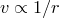
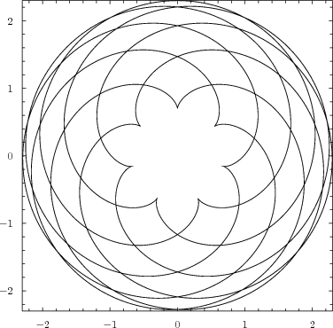
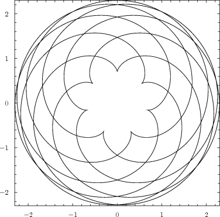
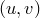
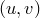

Text labels may be placed on plots using the set label command. As with all textual labels in PyXPlot, these are rendered in LaTeX:
set label 1 'Hello World' at 0,0
As in the previous section, the number 1 is a reference number, which allows the label to be removed by either of the following two commands:
set nolabel 1 unset label 1
The positional coordinates for the text label, placed after the at keyword, can be specified in any of the coordinate systems described for arrows above. A rotation angle may optionally be specified after the keyword rotate, to rotate text counter-clockwise by a given angle, measured in degrees. For example, the following would produce upward-running text:
set label 1 'Hello World' at axis3 3.0, axis4 2.7 rotate 90
A colour can also be specified, if desired, using the with colour modifier. For example, the following would produce a green label at the origin:
set label 2 'This label is green' at 0, 0 with colour green
The size of the text in such labels can be set globally using the set fontsize command. This applies not only to the set label command, but also to plot titles, axis labels, keys, etc. The value supplied should be a multiplicative factor greater than zero; a value of 2 would cause text to be rendered at twice its normal size, and a value of 0.5 would cause text to be rendered at half its normal size.
The set textcolour command can be used to globally set the colour of all text output, and applies to all of the text that the set fontsize command does. It is especially useful when producing plots to be embedded in presentation slideshows, where bright text on a dark background may be desired. It should be followed either by an integer, to set a colour from the present palette, or by a colour name. A list of the recognised colour names can be found in Section 8.4. For example:
set textcolour 2 set textcolour blue
By default, each label’s specified position corresponds to its bottom left corner. This alignment may be changed with the set texthalign and set textvalign commands. The former takes the options left, centre or right, and the latter takes the options bottom, centre or top, for example:
set texthalign right set textvalign top
A diagram of the atomic lines of hydrogen.
The wavelengths of the spectral lines of atomic hydrogen are given by the Rydberg formula,
where  is wavelength, is the Rydberg constant, predefined in PyXPlot as the variable phy_Ry, and n and m are positive non-zero integers such that m>n. The first few series are called the Lyman series (n |
||||
In the following example, we produce a diagram of the lines in the first four series, drawing the first 20 lines within each. At the bottom of the diagram, we overlay indications of the wavelengths of ten colour filters commonly used by astronomers (data taken from Binney & Merrifield, Galactic Astronomy, Princeton, 1998). |
||||
set numeric display latex |
||||
# Draw lines of first four series of hydrogen lines |
||||
# Label astronomical photometric colours |
||||
# Draw a marker for the Lyman limit |
||||
# Finally produce plot |
||||
![\includegraphics[width=11cm]{examples/eps/ex_hlines}](images/img-0433.png) |
A map of Australia.
In this example, we use PyXPlot to plot a map of Australia, using a coastal outline obtained from http://www.maproom.psu.edu/dcw/. We use the set label command to label the states and major cities. The files ex_map_1.dat.gz and ex_map_2.dat can be found in the PyXPlot installation tarball in the directory doc/examples/. |
set width 20 |
# We want a plot without axes or key |
# Labels for the states |
# Labels for the cities |
# A big label saying "Australia" |
# Plot the coastline and cities |
![\includegraphics[width=\textwidth ]{examples/eps/ex_map}](images/img-0436.png) |
 ), the Balmer series (n), the Paschen series (n
), the Balmer series (n), the Paschen series (n ) and the Brackett series (n). Within each series, the lines are given Greek letter designations – for m
) and the Brackett series (n). Within each series, the lines are given Greek letter designations – for m n, for m
n, for m , and so forth.
, and so forth. 
 4)
4)